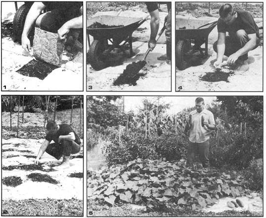

If you're young and lazy, old and feeble or just plain busy . . . you can reap rich garden harvests on slim expenditures of time and physical exertion by putting a rug in your produce patch. What's more, this gardening method requires no tilling of the soil, no cultivating, no weeding and no machinery in the form of tractors or gas powered tillers. The technique will allow you-in a matter of hours-to start a vegetable plot that will literally maintain itself, even on tough sod. Only the fall frosts will put an end to such a garden's unattended productivity.
Most of the few things you'll need for this "no work" way of gardening can be found at residential curbsides on rubbish disposal days or in the town dump: one or more discarded rugs, a knife, a spade, a wheelbarrow and-if it's available-some compost or manure.
Spread the carpet or carpets bottom-side-up on your garden site in the fall or at least a month before planting time in the spring. The covering will soon choke out all the grass and weeds beneath it, eliminating the need to plow or till the soil.
When you're ready to plant, cut one-foot squares from the rug, as shown in Fig. 1. For tomatoes, space the squares three feet apart in rows three feet apart. Separate the planting holes by two feet in each direction for green peppers, cucumbers and cantaloupes. Remember to leave a broad margin of carpet around the edges on which the cucumber, melon and other vines may spread (Fig. 2).
Place your wheelbarrow near each freshly-cut-out square and dig a 15" deep hole at every location (Fig. 3). Dump the soil into the barrow, mix it 50-50 with manure or compost, and fill each excavation with the mixture. Be sure to tamp all but the last four inches of the soil-compost combination well as you refill the holes. This will prevent later settling that might leave your plants sitting in depressions. New plants form poor root systems in compacted soil, however, so the top four-inch layer of each little plot must be left loose to allow each plant to establish itself quickly and vigorously.
You're now ready to place cucumber or melon seeds or pepper or tomato sets in each location (Fig. 4). Water well after planting. Except for pulling an occasional weed from the squares, that's it until harvest time (Fig. 5).
Your garden will need no more watering . . . the rug allows rain to seep through its weave, then retains the moisture by protecting the soil from the sun as it retards evaporation. Insect pests mostly avoid a carpeted vegetable patch because there are no weeds or loose soil for them to hide in. You won't even need to stake the tomatoes since they'll be lying on a clean surface with no dirt to blemish them. Picking your produce in even the rainiest weather will be a mud-free task.
I've found these scavenged floor coverings to be far superior to the newly-popular plastic sheet mulches. The rugs admit rather than repel rainwater, need no weights to hold them down, cost nothing and (assuming they're wool or cotton) decompose after a few seasons to provide a garden with valuable organic matter.
Once started, a carpeted garden cares little if you're present. We've taken long trips during the growing season and returned to ours to harvest ripe produce that had done splendidly with no care at all . . . and, when we stay at home, I can now squander the long hours I used to spend on garden drudgery. In my more than 50 years of raising home vegetables, I've yet to find an easier, more efficient way to produce a yearly crop of fresh-grown food.
|
 |
|
|